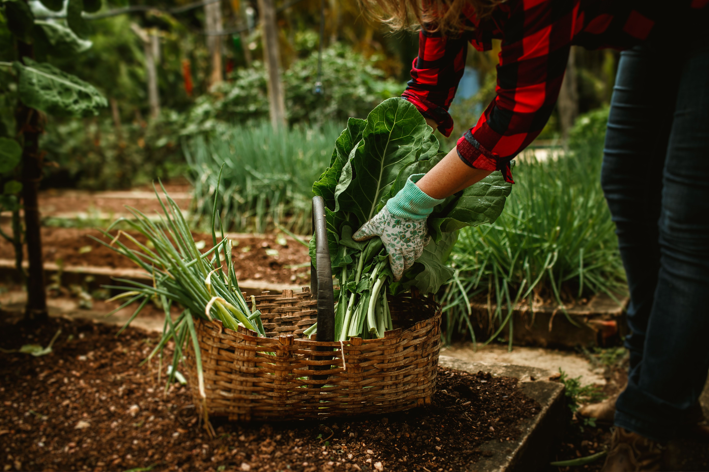
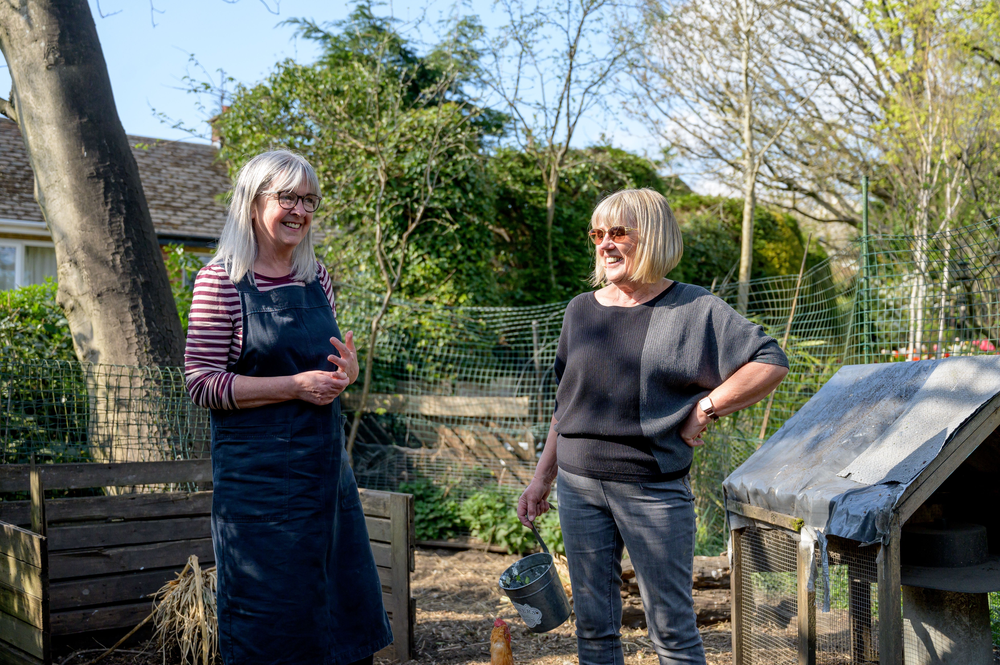
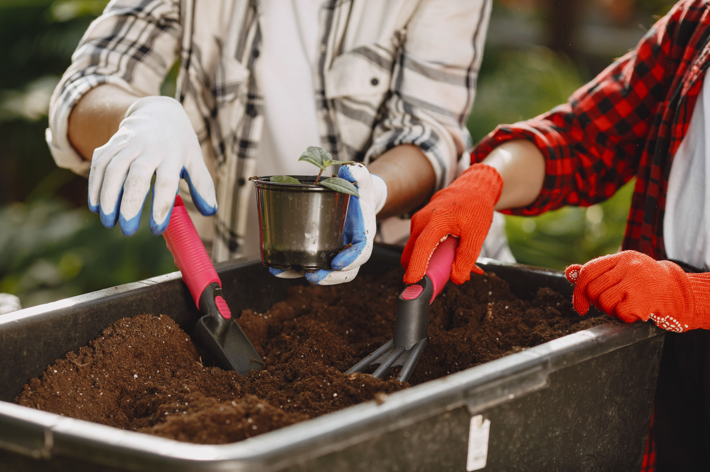

Nachbarsgarten
Willkommen beim Nachbarsgarten
Was ist Nachbarsgarten?
Nachbarsgarten bringt Menschen zusammen, die gerne gärtnern, aber nicht genug Platz haben, und Menschen, die einen Garten besitzen, ihn aber nicht mehr allein bewirtschaften möchten. Wir vermitteln ungenutzte Gartenflächen in der Nachbarschaft an alle, die Lust haben, selbst anzubauen, zu pflanzen und zu ernten.
So entsteht mehr als nur Gemüse: Wir teilen Wissen, Saatgut und Ernte miteinander. Man lernt die Menschen von nebenan kennen und gibt Gärten ein neues Leben.

Wer ist Nachbarsgarten?
Wir sind Elfriede Muster und Sabine Mustermann, Gründer- und Nachbarinnen, die eine Leidenschaft teilen: Gärten, in denen etwas wächst und Menschen zusammen bringen. Die einen besitzen ein Stück Land und freuen sich über Unterstützung, die anderen haben Zeit, Ideen und grüne Daumen, aber keinen eigenen Garten.
Aus dieser Idee ist eine lebendige Gemeinschaft geworden, in der man sich austauscht, gegenseitig hilft und voneinander lernt. Bei uns ist jede und jeder willkommen, ganz gleich ob Anfänger oder alter Hase, denn gute Nachbarschaft fängt manchmal ganz einfach über dem Gartenzaun an.

Was ist unser Ziel?
Wir möchten brachliegende Gärten wieder zum Leben erwecken und Menschen in der Nachbarschaft zusammenbringen. Jede Fläche, die bepflanzt wird, ist ein Gewinn für die Natur, für den Geldbeutel und für das Miteinander vor Ort.
Dabei geht es uns um mehr als die Ernte. Wir wollen Wissen weitergeben, regional und nachhaltig anbauen und zeigen, wie viel möglich ist, wenn viele Hände mit anpacken. Denn ein Garten wächst am besten, wenn man ihn gemeinsam pflegt.
